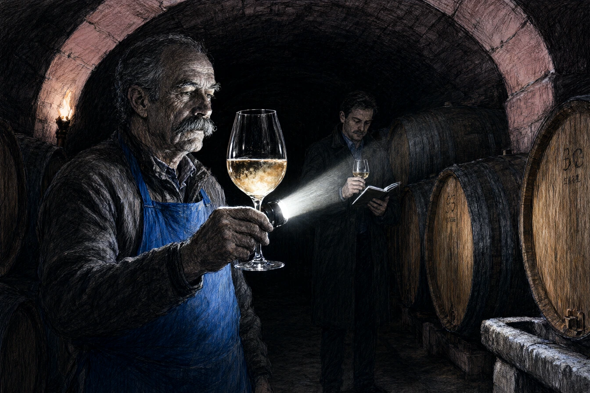

Dans la pénombre fraîche de la cave d'Andlau, où les voûtes de grès rose suintaient d'un salpêtre fin, l'odeur du marc fermenté prenait à la gorge. Jean-Paul Schneider, soixante-douze ans, les mains tannées par cinquante-cinq vendanges et le tablier bleu des vignerons de coteau, posa la pipette de verre sur le rebord d'un foudre de chêne de huit mille litres.
En face de lui, Antoine Dubois, inspecteur adjoint à l'organisme régional de défense et de gestion des appellations, tenait son verre à dégustation contre la lampe torche. Le Gewürztraminer du Moenchberg y luisait d'un jaune paille aux reflets d'or vieilli.
« Goûtez, Dubois, dit le vieux Schneider d'une voix rauque. Les parcelles de l'an quarante-sept. Pas une levure de synthèse, pas un gramme de sucre ajouté. C'est du caillou broyé par la pluie et la pente. »
Antoine porta le cristal à ses lèvres. La bouche était droite, saline, traversée d'une amertume de zeste de pamplemousse et de fumée qui ne ressemblait en rien aux vins liquoreux des grandes surfaces de la plaine.
L'inspecteur reposa le verre sur la bonde de bois.
« Le laboratoire interprofessionnel de Colmar a bloqué les certificats d'exportation hier matin, monsieur Schneider. La spectrométrie de masse indique la présence d'un tensioactif de synthèse dans les trois cuves d'assemblage. « Je n'ai jamais mis une goutte de détergent dans mes foudres, gronda le vieil homme, les sourcils broussailleux hérissés. Je lave à l'eau de source bouillante et à la brosse de chiendent. » « La molécule n'est pas un désinfectant ordinaire. C'est un copolymère d'adhésion foliaire. Le rapport conclut à une falsification du profil aromatique pour forcer l'extraction des terpènes. » »
Schneider cracha dans la rigole de sol.
« Vos experts ne savent plus boire que des solutions de laboratoire étalonnées à Bâle. Sortez de ma cave. »
* * *
À dix-huit heures, dans les laboratoires d'analyse agronomique d'Illkirch, Antoine Dubois compulsait les chromatographies en phase gazeuse.
La molécule incriminée portait la désignation technique Polymère N-44. C'était exactement le même dispersant tensioactif que son oncle Marc, journaliste d'investigation, avait retrouvé six mois plus tôt dans les fûts clandestins de l'Arche Verte à Molsheim.
Antoine alla frapper à la porte vitrée du directeur d'analyse, le docteur Keller-Wendt, qui signait les procès-verbaux de déclassement au kilomètre.
« Les échantillons du Moenchberg ont été prélevés par qui, monsieur le directeur ? « Par l'équipe de prélèvement sanitaire agréée, répondit le docteur sans lever le nez de ses bordereaux d'accréditation. Une filiale d'ingénierie environnementale mandatée par la chambre d'agriculture. » « C'est une filiale d'OmniCorp Agri-Tech. Schneider n'a jamais acheté ce produit. La parcelle qui borde le sommet du Moenchberg a été rachetée l'hiver dernier par une société civile d'exploitation gérée par Julien Ostermann. Ils traitent leurs vignes par drones de nuit à cinquante mètres au-dessus des rangs de Schneider. C'est une dérive d'embruns transportée par le vent d'ouest. » « Le protocole de l'appellation ne fait pas de météorologie, Dubois, » coupa le chef de service d'une voix neutre. »
Il tamponna le dossier d'un coup sec.
« La norme dit : zéro résidu de tensioactif non inscrit au cahier des charges. Il y a un résidu, le vin est déclassé en vin sans indication géographique. Schneider n'a qu'à arracher ses ceps ou céder son coteau à la coopérative du syndicat. Ils lui en offrent un million huit cent mille euros. Pour un homme sans héritier direct, c'est une retraite royale. »
* * *
Le lendemain à l'aube, Antoine remonta les lacets pierreux qui grimpaient à travers les terrasses d'Andlau.
Jean-Paul Schneider taillait les sarments morts au sécateur manuel, les genoux enfoncés dans la terre meuble encore blanchie par la gelée matinale. En haut de la crête, un grand hangar technique en bardage d'aluminium arborait le logo vert pomme d'OmniAgri. Des mâts de mesure météorologique tournoyaient silencieusement dans le vent froid des Vosges.
Antoine s'arrêta au bout du rang.
« Ils veulent vos terrasses pour agrandir la parcelle d'expérimentation viticole, monsieur Schneider. Le déclassement est fabriqué pour faire baisser le prix du foncier avant adjudication judiciaire. « Je sais, » dit le vieil homme sans cesser de tailler d'un geste sec et régulier. »
Il ramassa un sarment sec et le cassa en deux entre ses pouces rugueux.
« Le jeune Ostermann est venu en personne avec un notaire de Barr le mois dernier. Il m'a dit que mes ceps étaient trop vieux, que le rendement était indigne d'un terroir d'avenir, et qu'OmniCorp allait replanter des clones résistants au stress hydrique avec irrigation pilotée par satellite. Il m'a tendu un stylo en or. Je lui ai dit de repasser quand le clocher d'Andlau sonnerait treize heures. »
Schneider redressa son grand corps voûté et fixa l'inspecteur.
« Et vous, jeune homme ? Vous venez m'apporter la saisie d'huissier ? « J'ai envoyé ma démission par lettre recommandée ce matin, répondit Antoine. Mais vos vingt mille bouteilles de la récolte passée ne porteront plus la mention Grand Cru. Vous ne pouvez plus les vendre au tarif de l'appellation. » « Le vin n'a pas besoin de papier doré pour désaltérer les honnêtes gens, » cracha le vigneron en remettant son sécateur au ceinturon. »
* * *
Deux mois plus tard, la commission départementale confirmait la déchéance définitive de l'agrément pour l'ensemble du millésime.
Dans la cour du domaine d'Andlau, une camionnette bâchée s'arrêta sur les pavés. Antoine Dubois descendit de la cabine, enfila un bleu de travail et salua Schneider qui chargeait des cartons d'expédition sur un diable en fer.
Les étiquettes de bouteilles ne portaient ni armoiries, ni mention de cépage, ni sceau d'appellation protégée. Un simple rectangle de papier vergé blanc indiquait : Vin de France, récolté et mis en bouteille par Jean-Paul Schneider à Andlau.
« Les sommeliers de Strasbourg en prennent cent caisses pour les tables de la Krutenau, dit Antoine en saisissant deux cartons à bras-le-corps. Les cavistes indépendants de Bâle ont réservé le reste de la cuve numéro deux. « Tant qu'il y a des gosiers pour reconnaître la roche, la vigne pousse, » répondit le vieux vigneron en essuyant le goulot d'une bouteille avec un chiffon propre. »
Il déboucha un flacon d'un coup de tire-bouchon sec, versa le vin dans deux verres d'auberge à pied court et en tendit un à Antoine. Le liquide brillait dans la lumière oblique du soleil couchant. Ils burent en silence, sans trinquer, adossés au mur de grès qui retenait la colline.